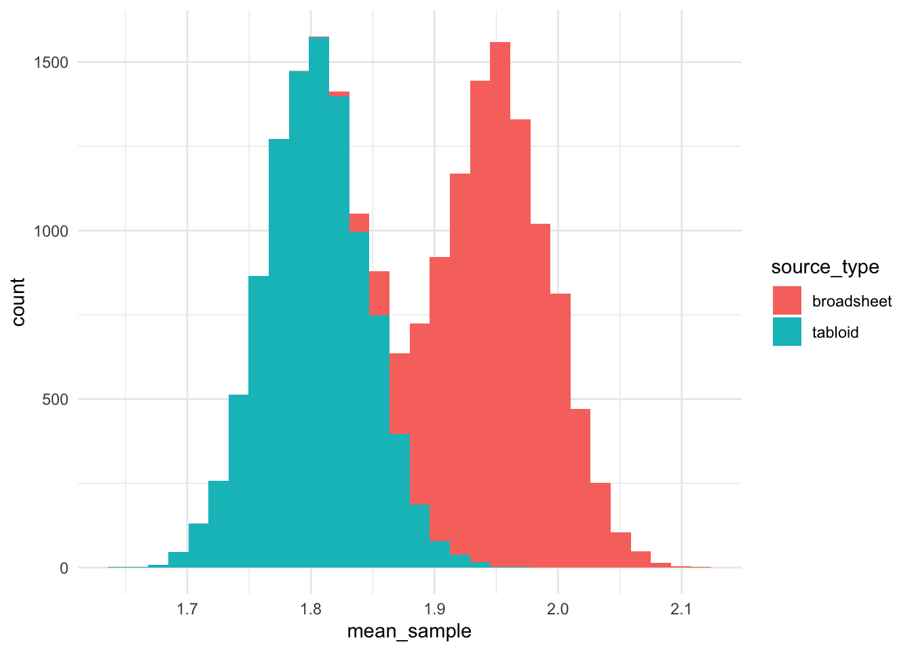
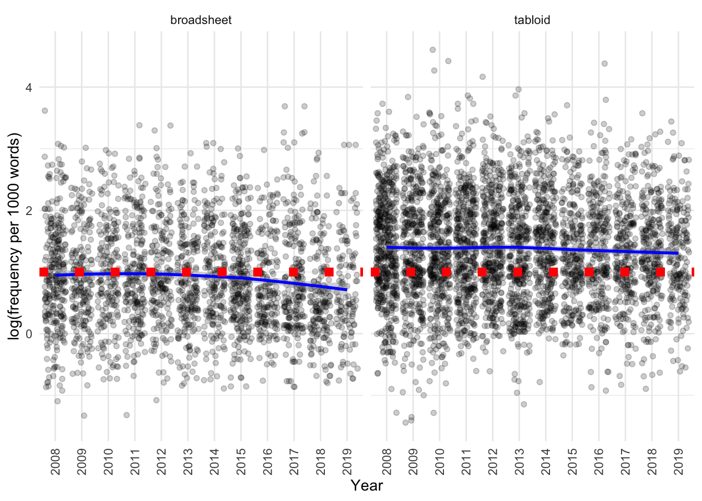
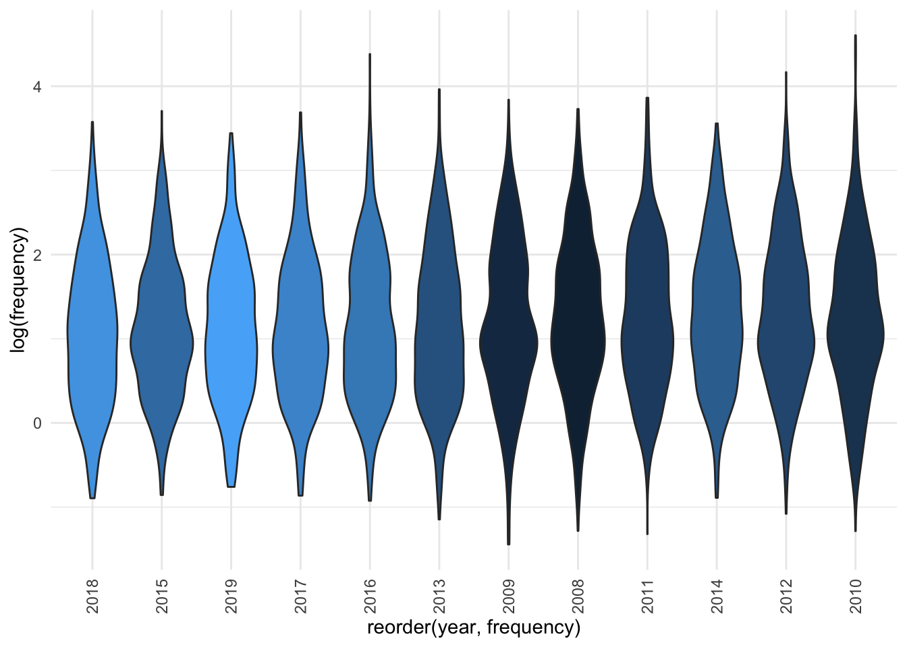

There is interest in exploring statistics around the use of OVERWEIGHT around the following research questions:
- Do tabloids use OVERWEIGHT more than broadsheets?
- Or do broadsheets use OVERWEIGHT more than tabloids?
- Or is there no discernible pattern of use?
- Is there any newspaper that uses OVERWEIGHT more than others?
- Any year where OVERWEIGHT is the most frequent/least frequent?
Additional question:
- Is there a difference of use by primary topic?
Executive summary
1. Tabloids use OVERWEIGHT more frequently than broadsheets.
The total number of uses of OVERWEIGHT we observe is higher in tabloids and lower in broadsheets than we would expect based on the word count in these subcorpora (p < 0.001).
The number of articles with use of OVERWEIGHT we observe is higher in tabloids and lower in broadsheets than we would expect based on the word count in these subcorpora (p < 0.001).
More specifically, a Welch Two Sample t-test testing the difference between the frequency in broadsheets per 1000 words and frequency in tabloids (mean of broadsheets = 3.55, mean of tabloids = 5.73) suggests that the effect is negative, statistically significant, and small (difference = -2.18, 95% CI [-2.42, -1.95], t(6712.33) = -18.20, p < .001; Cohen’s d = -0.43, 95% CI [-0.48, -0.38])
The total number of uses of OVERWEIGHT we observe is higher in tabloids and lower in broadsheets than we would expect based on the word count in these subcorpora (p < 0.001).
The number of articles with use of OVERWEIGHT we observe is higher in tabloids and lower in broadsheets than we would expect based on the word count in these subcorpora (p < 0.001).
2. Tabloids have shorter article lengths than broadsheets, as demonstrated in the analysis of OBESE.
3. Investigating the data by source and year revealed that these variables explained a small amount of variance in the data, with OVERWEIGHT being used less frequently in the Age, Australian, Canberra Times and Sydney Morning Herald relative to the Advertiser, while in the Hobart Mercury and Northern Territorian it was used somewhat more frequently than in the Advertiser. Use of OVERWEIGHT decreased with time in the corpus.
4. Significant differences in the use of OVERWEIGHT were observed in articles on different topics, with articles annotated as “Bio-medical Research”, “Women and Pregnancy” and “Children & Parents” using more instances per 1000 words than articles discussing “Politics”, schooling and “Music and Movies”.
5. Significant differences in article topics were also observed between tabloids and broadsheets, as discussed in the analysis of OBESE.
Data source
CQPweb data was provided. To calculate normalised frequency, we divide the number of observations from CQPweb by the word count as calculated in Python, and multiple by 1000.
Code
adj_overweight <- read_cqpweb("aoc_all_overweight_tagadjlemma.txt")
metadata <- read_csv(here("100_data_raw", "corpus_cqpweb_metadata.csv"))
additional_source_metadata <- read_csv(here("100_data_raw", "addition_source_metadata.csv"))
topic_labels <- read_csv(here("100_data_raw", "topic_labels.csv"))
metadata_full <- inner_join(inner_join(metadata,
topic_labels,
by = c("dominant_topic" = "topic_number")),
additional_source_metadata)
overweight_annotated <- inner_join(
adj_overweight, metadata_full, by = c("text" = "article_id")) %>%
mutate(frequency = 10^3*no_hits_in_text/wordcount_total) We group articles into tabloids and broadsheets, and by orientation, in the following manner:
| source | source_type | orientation |
|---|---|---|
| Advertiser | tabloid | right |
| Australian | broadsheet | right |
| NorthernT | tabloid | right |
| CourierMail | tabloid | right |
| Age | broadsheet | left |
| SydHerald | broadsheet | left |
| Telegraph | tabloid | right |
| WestAus | tabloid | right |
| CanTimes | broadsheet | left |
| HeraldSun | tabloid | right |
| HobMercury | tabloid | right |
| BrisTimes | broadsheet | left |
Tabloid vs broadsheet
What is the distribution of OVERWEIGHT in articles?
Code
overweight_annotated %>%
ggplot(aes(x = no_hits_in_text, fill = source_type)) +
geom_bar(position = "dodge2") +
labs(
x = "Number of hits in article, CQPWeb",
y = "Number of articles in corpus",
fill = "Source type"
)
no_articles_broadsheet <- metadata_full %>%
filter(source_type == "broadsheet") %>% nrow()
no_articles_tabloid <- metadata_full %>%
filter(source_type == "tabloid") %>% nrow()It seems like there is more usage in tabloids than broadsheets. Let’s divide the numbers by the total number of articles in tabloids/broadsheets, respectively.
Code
overweight_annotated %>%
group_by(source_type, no_hits_in_text) %>%
count() %>%
pivot_wider(names_from = source_type, values_from = n, values_fill = 0) %>%
mutate(broadsheet = 1000*broadsheet/no_articles_broadsheet,
tabloid = 1000*tabloid/no_articles_tabloid) %>%
pivot_longer(cols = c(broadsheet, tabloid)) %>%
ggplot(aes(x = no_hits_in_text, y=value, fill = name)) +
geom_bar(position = "dodge2", stat="identity") +
labs(
x = "Number of hits in article, CQPWeb",
y = "Normalised number of articles, per 1000, in corpus",
fill = "Source type"
)We can see that the trend of higher usage holds true for tabloids even if we consider that tabloids contribute more articles to the corpus than broadsheets.
How is this usage distributed by year (number of articles in corpus)?
Code
| source | 2008 | 2009 | 2010 | 2011 | 2012 | 2013 | 2014 | 2015 | 2016 | 2017 | 2018 | 2019 | Total |
|---|---|---|---|---|---|---|---|---|---|---|---|---|---|
| Advertiser | 95 | 94 | 84 | 86 | 91 | 99 | 75 | 77 | 67 | 66 | 48 | 52 | 934 |
| Age | 82 | 41 | 36 | 45 | 46 | 56 | 50 | 85 | 56 | 59 | 40 | 29 | 625 |
| Australian | 65 | 53 | 28 | 46 | 25 | 22 | 34 | 20 | 22 | 17 | 35 | 25 | 392 |
| CanTimes | 51 | 43 | 39 | 48 | 49 | 60 | 65 | 69 | 39 | 57 | 41 | 20 | 581 |
| CourierMail | 126 | 85 | 87 | 76 | 75 | 91 | 85 | 75 | 67 | 63 | 95 | 56 | 981 |
| HeraldSun | 127 | 109 | 121 | 132 | 108 | 95 | 81 | 59 | 58 | 58 | 72 | 56 | 1076 |
| HobMercury | 57 | 31 | 43 | 36 | 36 | 43 | 22 | 22 | 31 | 27 | 29 | 31 | 408 |
| NorthernT | 34 | 26 | 27 | 20 | 12 | 13 | 15 | 15 | 16 | 15 | 12 | 11 | 216 |
| SydHerald | 96 | 68 | 90 | 81 | 78 | 73 | 58 | 90 | 74 | 79 | 69 | 56 | 912 |
| WestAus | 88 | 70 | 61 | 71 | 72 | 54 | 70 | 34 | 36 | 26 | 9 | 5 | 596 |
| BrisTimes | 0 | 0 | 0 | 0 | 0 | 1 | 8 | 27 | 5 | 4 | 12 | 15 | 72 |
| Telegraph | 0 | 0 | 0 | 0 | 0 | 0 | 54 | 39 | 59 | 71 | 66 | 54 | 343 |
| Total | 821 | 620 | 616 | 641 | 592 | 607 | 617 | 612 | 530 | 542 | 528 | 410 | 7136 |
We can see that apart from the Brisbane times and Daily Telegraph, there are articles using OVERWEIGHT every year and in every publication. We will filter out these two sources.
How is the frequency (per thousand words) of the usage of OVERWEIGHT distributed by tabloids/broadsheets?
Code
We can see that the frequency is slightly higher in tabloids than in broadsheets.
And let’s also use a histogram to look at the distribution:
Code
Note that broadsheets have somewhat longer texts than tabloids:
Code
Let’s use a histogram to look at the distribution in more detail:
Code
The log-transformed word count data is approximately normally distributed.
Let’s see if the difference in length of articles using OVERWEIGHT in tabloids and broadsheets is significant?
Code
wordcount_broadsheet <- overweight_annotated_filtered[overweight_annotated_filtered$source_type == "broadsheet","wordcount_total"]
wordcount_tabloid <- overweight_annotated_filtered[overweight_annotated_filtered$source_type == "tabloid","wordcount_total"]
report::report(t.test(wordcount_broadsheet,wordcount_tabloid))The Welch Two Sample t-test testing the difference between wordcount_broadsheet and wordcount_tabloid (mean of x = 732.66, mean of y = 484.51) suggests that the effect is positive, statistically significant, and medium (difference = 248.15, 95% CI [226.60, 269.71], t(4626.50) = 22.57, p < .001; Cohen’s d = 0.58, 95% CI [0.53, 0.63])
Yes, overall articles in tabloids are significantly shorter than in broadsheets.
This is confirmed using an FP test:
Code
fp_test(
wc1 = wordcount_broadsheet,
wc2 = wordcount_tabloid,
label1 = "broadsheet",
label2 = "tabloid",
dist = mydistribution
)
Approximative Two-Sample Fisher-Pitman Permutation Test
data: wc by label (broadsheet, tabloid)
Z = 22.598, p-value < 1e-04
alternative hypothesis: true mu is not equal to 0If we then test the difference between the frequency of OVERWEIGHT in tabloids and broadsheets, we can see that a higher frequency per 1000 words is detected for usage of OVERWEIGHT in tabloids than broadsheets.
Code
frequency_broadsheet <- overweight_annotated_filtered[overweight_annotated_filtered$source_type == "broadsheet","frequency"]
frequency_tabloid <- overweight_annotated_filtered[overweight_annotated_filtered$source_type == "tabloid","frequency"]
report::report(t.test(frequency_broadsheet, frequency_tabloid))The Welch Two Sample t-test testing the difference between frequency_broadsheet and frequency_tabloid (mean of x = 3.55, mean of y = 5.73) suggests that the effect is negative, statistically significant, and small (difference = -2.18, 95% CI [-2.42, -1.95], t(6712.33) = -18.20, p < .001; Cohen’s d = -0.43, 95% CI [-0.48, -0.38])
So, yes, the frequency of use of OVERWEIGHT is lower in broadsheets than in tabloids.
This is confirmed using an FP test:
Code
fp_test(
wc1 = frequency_broadsheet,
wc2 = frequency_tabloid,
label1 = "broadsheet",
label2 = "tabloid",
dist = mydistribution
)
Approximative Two-Sample Fisher-Pitman Permutation Test
data: wc by label (broadsheet, tabloid)
Z = -15.923, p-value < 1e-04
alternative hypothesis: true mu is not equal to 0Let’s use bootstrapping to see if the raw frequencies of usage of OVERWEIGHT are different?
Code
broadsheet_counts <- NULL
tabloid_counts <- NULL
for (i in 1:10000) {
x <- mean(sample({overweight_annotated_filtered %>%
filter(source_type == "broadsheet") %>%
pull(no_hits_in_text)}, 1000, replace = FALSE))
y <- mean(sample({overweight_annotated_filtered %>%
filter(source_type == "tabloid") %>%
pull(no_hits_in_text)}, 1000, replace = FALSE))
broadsheet_counts <- c(broadsheet_counts, x)
tabloid_counts <- c(tabloid_counts, y)
}
counts_comparison <- data.frame(
mean_sample = c(broadsheet_counts, tabloid_counts),
source_type = c(
rep("broadsheet", length(broadsheet_counts)),
rep("tabloid", length(tabloid_counts))))
counts_comparison %>%
ggplot(aes(x = mean_sample, fill = source_type)) +
geom_histogram()
It is interesting that the distribution of usage of OVERWEIGHT is ~1.8 uses per article in tabloid publications (the results for “OVERWEIGHT” were 1.6), while the distribution for broadsheets was bimodal.
The Welch Two Sample t-test testing the difference between broadsheet_counts and tabloid_counts (mean of x = 1.95, mean of y = 1.80) suggests that the effect is positive, statistically significant, and large (difference = 0.15, 95% CI [0.15, 0.15], t(19971.71) = 248.41, p < .001; Cohen’s d = 3.51, 95% CI [3.86, 3.86])
This is confirmed using an FP test:
Code
fp_test(
wc1 = broadsheet_counts,
wc2 = tabloid_counts,
label1 = "broadsheet",
label2 = "tabloid",
dist = mydistribution
)
Approximative Two-Sample Fisher-Pitman Permutation Test
data: wc by label (broadsheet, tabloid)
Z = 122.9, p-value < 1e-04
alternative hypothesis: true mu is not equal to 0Let’s look at a jitter plot of the data:
Code
overweight_annotated_filtered %>%
ggplot(aes(x = as.factor(year),
y = log(frequency),
fill = year)) +
geom_jitter(alpha = 0.2) +
geom_smooth(aes(group = source_type), col = "blue", method = "loess") +
geom_hline(yintercept = 1, col = "red", lty = 3, size = 3) +
facet_wrap(~source_type) +
theme(axis.text.x =
element_text(angle = 90, vjust = 0.5, hjust=1),
legend.position = "NA") +
labs(
x = "Year",
y = "log(frequency per 1000 words)"
)
The jitter plot suggests that:
- Tabloids have a higher frequency of usage than broadsheets
- There may be a subtle decrease in frequency with time, especially in broadsheets
Comparing observed to normalised to subcorpus size data
We can investigate the prevalence of the use of OVERWEIGHT using goodness of fit tests, comparing the distribution in:
- tabloids vs broadsheets
- left and right leaning publications
We can do this by looking at:
- the total number of instances in each subcorpus, normalised to the total number of words in each subcorpus
- the number of articles that feature this language type, normalised to the total number of articles in each subcorpus
Tabloids vs broadsheets
The total number of uses of OVERWEIGHT we observe is higher in tabloids and lower in broadsheets than we would expect based on the word count in these subcorpora (p < 0.001).
Code
chisq_instances_wc_normalised(overweight_annotated_filtered, metadata_full, source_type) |> kable()| variable | value |
|---|---|
| method | Chi-squared test for given probabilities |
| parameter | 1 |
| statistic | 914.3487 |
| p.value | 7.457918e-201 |
| broadsheet_observed | 4897 |
| broadsheet_expected | 6584.270411287 |
| tabloid_observed | 7594 |
| tabloid_expected | 5906.729588713 |
The number of articles with use of OVERWEIGHT we observe is higher in tabloids and lower in broadsheets than we would expect based on the article count in these subcorpora (p < 0.001).
Code
chisq_articles_totalart_normalised(overweight_annotated_filtered, metadata_full, source_type) |> kable()| variable | value |
|---|---|
| method | Chi-squared test for given probabilities |
| parameter | 1 |
| statistic | 34.63231 |
| p.value | 3.982419e-09 |
| broadsheet_observed | 2510 |
| broadsheet_expected | 2747.17631770057 |
| tabloid_observed | 4211 |
| tabloid_expected | 3973.82368229943 |
Left vs right-leaning publications
The total number of uses of OVERWEIGHT we observe is higher in right and lower in left-leaning publications than we would expect based on the word count in these subcorpora (p < 0.001).
Code
chisq_instances_wc_normalised(overweight_annotated_filtered, metadata_full, orientation) |> kable()| variable | value |
|---|---|
| method | Chi-squared test for given probabilities |
| parameter | 1 |
| statistic | 385.5095 |
| p.value | 7.861193e-86 |
| left_observed | 4191 |
| left_expected | 5274.86941563361 |
| right_observed | 8300 |
| right_expected | 7216.13058436639 |
The number of articles that use OVERWEIGHT we observe is somewhat higher in right and lower in left-leaning publications than we would expect based on total article count in these subcorpora (p < 0.002).
Code
chisq_articles_totalart_normalised(overweight_annotated_filtered, metadata_full, orientation) |> kable()| variable | value |
|---|---|
| method | Chi-squared test for given probabilities |
| parameter | 1 |
| statistic | 10.56669 |
| p.value | 0.00115144 |
| left_observed | 2118 |
| left_expected | 2243.67289683905 |
| right_observed | 4603 |
| right_expected | 4477.32710316095 |
Differences in usage by source
Is there a difference in the usage of overweight by source?
Code
overweight_annotated_filtered %>%
ggplot(aes(x = reorder(source,frequency),
y = log(frequency),
fill = source_type)) +
geom_boxplot() +
theme(axis.text.x =
element_text(angle = 90, vjust = 0.5, hjust=1),
legend.position = "NA")The visualisation suggests there are not - only the differences observed above for tabloids vs broadsheets.
What are the means and standard deviations of the frequency by source?
Code
| source | mean | median | sd | type |
|---|---|---|---|---|
| Australian | 3.222922 | 1.972394 | 3.725712 | broadsheet |
| Age | 3.401629 | 2.169197 | 3.507473 | broadsheet |
| SydHerald | 3.553677 | 2.242991 | 3.678032 | broadsheet |
| CanTimes | 3.938779 | 2.475248 | 4.068473 | broadsheet |
| WestAus | 5.455848 | 3.676471 | 5.423733 | tabloid |
| Advertiser | 5.494919 | 3.478271 | 5.403250 | tabloid |
| CourierMail | 5.595699 | 3.824092 | 5.784324 | tabloid |
| HeraldSun | 5.654331 | 3.524254 | 6.816835 | tabloid |
| HobMercury | 6.284242 | 4.319836 | 7.021730 | tabloid |
| NorthernT | 7.538601 | 5.772018 | 5.798708 | tabloid |
It seems that within the different sources among broadsheets there is not much difference among the frequency of use of OVERWEIGHT. Among tabloids, the Hobart Mercury and the Northern Territorian seem to have higher frequency of use of OVERWEIGHT than other tabloids.
Differences in usage by year
Is there any year when OVERWEIGHT is used more frequently than others?
Code
overweight_annotated_filtered %>%
ggplot(aes(x = reorder(year,frequency),
y = log(frequency),
fill = year)) +
geom_boxplot() +
theme(axis.text.x =
element_text(angle = 90, vjust = 0.5, hjust=1),
legend.position = "NA")Based on the visualisation it seems not. If we separate out by source there also doesn’t seem to be much difference. If we use a jitter plot to visualise the data, then fit a smoothing line and compare with the line of “no change” (dashed red line), we can see that there really isn’t much of a difference by source and year:
Code
overweight_annotated_filtered %>%
ggplot(aes(x = as.factor(year),
y = log(frequency),
fill = year)) +
geom_jitter(alpha = 0.2) +
geom_smooth(aes(group = source), col = "blue", method = "loess") +
geom_hline(yintercept = 1, col = "red", lty = 3, size = 3) +
facet_wrap(~source) +
theme(axis.text.x =
element_text(angle = 90, vjust = 0.5, hjust=1),
legend.position = "NA") +
labs(
x = "Year",
y = "log(frequency per 1000 words)"
)There may be a subtle decrease over time in the Advertiser, Australian, Northern Territorian and Sydney Morning Herald, however, it is unclear whether this trend is very strong. There may be a slight increase over time in the Courier Mail.
The distributions each year also look quite similar:
Code
overweight_annotated_filtered %>%
ggplot(aes(x = reorder(year,frequency),
y = log(frequency),
fill = year)) +
geom_violin() +
theme(axis.text.x =
element_text(angle = 90, vjust = 0.5, hjust=1),
legend.position = "NA")
Code
| year | mean | median | sd |
|---|---|---|---|
| 2018 | 4.199641 | 2.810998 | 4.293019 |
| 2015 | 4.259324 | 2.791457 | 4.172669 |
| 2019 | 4.338273 | 2.919708 | 4.328465 |
| 2017 | 4.504813 | 2.857143 | 4.920504 |
| 2016 | 4.670847 | 2.785537 | 5.941054 |
| 2013 | 4.753826 | 2.894362 | 5.276483 |
| 2009 | 5.006770 | 3.037208 | 5.030949 |
| 2008 | 5.213967 | 3.368624 | 5.275388 |
| 2011 | 5.246781 | 3.300330 | 5.712582 |
| 2014 | 5.314321 | 3.430532 | 5.114382 |
| 2012 | 5.365506 | 3.460580 | 5.642391 |
| 2010 | 5.419863 | 3.300339 | 7.632081 |
Differences in usage by source type, source and year
We can also try to simultaneously model differences by source type, source and year.
As expected, a model that includes the source type (tabloid vs broadsheet) gives a better fit than one that does not:
Code
overweight_annotated_filtered$scaled_year <- scale(
overweight_annotated_filtered$year, scale = F)
library(lme4)
# base model
m_0_base <- lm(log(frequency) ~ 1,
data = overweight_annotated_filtered)
# with source type
m_0_sourcetype <- lm(log(frequency) ~ source_type,
data = overweight_annotated_filtered)
# with year
m_0_year <- lm(log(frequency) ~ scaled_year,
data = overweight_annotated_filtered)
# with source
m_0_source <- lm(log(frequency) ~ source,
data = overweight_annotated_filtered)
# with source and year
m_0_sourceyear <- lm(log(frequency) ~ source + scaled_year,
data = overweight_annotated_filtered)
# compare
rbind({broom::glance(m_0_base) %>%
dplyr::select(-df.residual,- deviance, -nobs) %>%
mutate(model = "1")},
{broom::glance(m_0_sourcetype)%>%
dplyr::select(-df.residual,- deviance, -nobs) %>%
mutate(model = "source_type")},
{broom::glance(m_0_year) %>%
dplyr::select(-df.residual,- deviance, -nobs) %>%
mutate(model = "scaled_year")},
{broom::glance(m_0_source) %>%
dplyr::select(-df.residual,- deviance, -nobs) %>%
mutate(model = "source")},
{broom::glance(m_0_sourceyear)%>%
dplyr::select(-df.residual,- deviance, -nobs) %>%
mutate(model = "source_year")}
) %>%
dplyr::select(model, everything()) %>%
arrange(AIC) %>%
kable()| model | r.squared | adj.r.squared | sigma | statistic | p.value | df | logLik | AIC | BIC |
|---|---|---|---|---|---|---|---|---|---|
| source_year | 0.0804848 | 0.0791144 | 0.8365374 | 58.73234 | 0e+00 | 10 | -8331.590 | 16687.18 | 16768.94 |
| source | 0.0781495 | 0.0769133 | 0.8375366 | 63.21362 | 0e+00 | 9 | -8340.114 | 16702.23 | 16777.17 |
| source_type | 0.0675769 | 0.0674381 | 0.8418241 | 486.95617 | 0e+00 | 1 | -8378.436 | 16762.87 | 16783.31 |
| scaled_year | 0.0042355 | 0.0040873 | 0.8699478 | 28.57970 | 1e-07 | 1 | -8599.302 | 17204.60 | 17225.04 |
| 1 | 0.0000000 | 0.0000000 | 0.8717311 | NA | NA | NA | -8613.566 | 17231.13 | 17244.76 |
We can see that the model incorporating source and scaled year provides the best fit for the data, explaining somewhat more variability than that which includes only source type.
Code
anova(m_0_base, m_0_sourceyear)Analysis of Variance Table
Model 1: log(frequency) ~ 1
Model 2: log(frequency) ~ source + scaled_year
Res.Df RSS Df Sum of Sq F Pr(>F)
1 6720 5106.6
2 6710 4695.6 10 411.01 58.732 < 2.2e-16 ***
---
Signif. codes: 0 '***' 0.001 '**' 0.01 '*' 0.05 '.' 0.1 ' ' 1Code
Proportion of data points with:
- abs(standardized residuals) > 3.29: 0.15%
- abs(standardized residuals) > 2.58: 0.92%
- abs(standardized residuals) > 1.96: 4.58%
All of these indicate the model is performing reasonably well on the data.
Let’s summarise the model (note that the intercept corresponds to the “first” source, i.e. the Advertiser):
Code
sjPlot::tab_model(m_0_sourceyear) | log(frequency) | |||
|---|---|---|---|
| Predictors | Estimates | CI | p |
| (Intercept) | 1.31 | 1.26 – 1.37 | <0.001 |
| source [Age] | -0.44 | -0.53 – -0.36 | <0.001 |
| source [Australian] | -0.52 | -0.62 – -0.43 | <0.001 |
| source [CanTimes] | -0.29 | -0.37 – -0.20 | <0.001 |
| source [CourierMail] | 0.04 | -0.04 – 0.11 | 0.340 |
| source [HeraldSun] | 0.03 | -0.05 – 0.10 | 0.472 |
| source [HobMercury] | 0.17 | 0.07 – 0.26 | 0.001 |
| source [NorthernT] | 0.43 | 0.31 – 0.56 | <0.001 |
| source [SydHerald] | -0.40 | -0.48 – -0.33 | <0.001 |
| source [WestAus] | 0.03 | -0.06 – 0.11 | 0.537 |
| scaled year | -0.01 | -0.02 – -0.01 | <0.001 |
| Observations | 6721 | ||
| R2 / R2 adjusted | 0.080 / 0.079 | ||
This model is suggesting that relative to the Advertiser, the Age, Australian, Canberra Times and Sydney Morning Herald (so all broadsheets) have lower frequency of usage of OVERWEIGHT, while the Hobart Mercury and Northern Territorian have higher frequency of usage. OVERWEIGHT is used less frequently in later years in the corpus relative to earlier ones.
Code
report::report(m_0_sourceyear)We fitted a linear model (estimated using OLS) to predict frequency with source and scaled_year (formula: log(frequency) ~ source + scaled_year). The model explains a statistically significant and weak proportion of variance (R2 = 0.08, F(10, 6710) = 58.73, p < .001, adj. R2 = 0.08). The model’s intercept, corresponding to source = Advertiser and scaled_year = 0, is at 1.31 (95% CI [1.26, 1.37], t(6710) = 48.02, p < .001). Within this model:
- The effect of source [Age] is statistically significant and negative (beta = -0.44, 95% CI [-0.53, -0.36], t(6710) = -10.23, p < .001; Std. beta = -0.18, 95% CI [-0.22, -0.14])
- The effect of source [Australian] is statistically significant and negative (beta = -0.52, 95% CI [-0.62, -0.43], t(6710) = -10.41, p < .001; Std. beta = -0.21, 95% CI [-0.25, -0.16])
- The effect of source [CanTimes] is statistically significant and negative (beta = -0.29, 95% CI [-0.37, -0.20], t(6710) = -6.52, p < .001; Std. beta = -0.13, 95% CI [-0.17, -0.09])
- The effect of source [CourierMail] is statistically non-significant and positive (beta = 0.04, 95% CI [-0.04, 0.11], t(6710) = 0.95, p = 0.340; Std. beta = 0.01, 95% CI [-0.02, 0.04])
- The effect of source [HeraldSun] is statistically non-significant and positive (beta = 0.03, 95% CI [-0.05, 0.10], t(6710) = 0.72, p = 0.472; Std. beta = 3.54e-03, 95% CI [-0.03, 0.04])
- The effect of source [HobMercury] is statistically significant and positive (beta = 0.17, 95% CI [0.07, 0.26], t(6710) = 3.34, p < .001; Std. beta = 0.06, 95% CI [0.02, 0.10])
- The effect of source [NorthernT] is statistically significant and positive (beta = 0.43, 95% CI [0.31, 0.56], t(6710) = 6.84, p < .001; Std. beta = 0.18, 95% CI [0.13, 0.24])
- The effect of source [SydHerald] is statistically significant and negative (beta = -0.40, 95% CI [-0.48, -0.33], t(6710) = -10.33, p < .001; Std. beta = -0.17, 95% CI [-0.20, -0.13])
- The effect of source [WestAus] is statistically non-significant and positive (beta = 0.03, 95% CI [-0.06, 0.11], t(6710) = 0.62, p = 0.537; Std. beta = -2.62e-03, 95% CI [-0.04, 0.04])
- The effect of scaled year is statistically significant and negative (beta = -0.01, 95% CI [-0.02, -6.59e-03], t(6710) = -4.13, p < .001; Std. beta = -0.02, 95% CI [-0.03, -0.01])
Standardized parameters were obtained by fitting the model on a standardized version of the dataset. 95% Confidence Intervals (CIs) and p-values were computed using the Wald approximation.
To summarise, a model was fit by source and year, which explains a very small amount of variance in the data. It showed that the Age, Australian, Canberra Times and Sydney Morning Herald had a lower frequency of use of OVERWEIGHT relative to the Advertiser, while in the Hobart Mercury, Northern Territorian OVERWEIGHT was used somewhat more frequently than in the Advertiser. OVERWEIGHT is used less frequently in later years in the corpus relative to earlier ones.
Next, let’s compare if using a mixed model improves the fit of the model.
Code
m_1_source <- lmer(log(frequency) ~ 1 + (1|source),
data = overweight_annotated_filtered, REML = T)
m_1_source_year <- lmer(log(frequency) ~ scaled_year + (1|source),
data = overweight_annotated_filtered, REML = T)
m_1_source_year2 <- lmer(log(frequency) ~ scaled_year + (scaled_year|source),
data = overweight_annotated_filtered, REML = T)
m_1_source_year_type <- lmer(log(frequency) ~ scaled_year + source_type + (1|source),
data = overweight_annotated_filtered, REML = T)
m_1_source_year_type2 <- lmer(log(frequency) ~ scaled_year + source_type + (scaled_year|source),
data = overweight_annotated_filtered, REML = T)
rbind(
{broom::glance(m_0_sourceyear)%>%
dplyr::select(AIC, BIC, logLik) %>%
mutate(model = "scaled_year + source")},
{broom.mixed::glance(m_1_source) %>%
dplyr::select(AIC, BIC, logLik) %>%
mutate(model = "1 + (1/source)")
},
{broom.mixed::glance(m_1_source_year) %>%
dplyr::select(AIC, BIC, logLik) %>%
mutate(model = "scaled_year + (1/source)")},
{broom.mixed::glance(m_1_source_year2) %>%
dplyr::select(AIC, BIC, logLik) %>%
mutate(model = "scaled_year + (scaled_year/source)")},
{broom.mixed::glance(m_1_source_year_type2) %>%
dplyr::select(AIC, BIC, logLik) %>%
mutate(model = "scaled_year + source_type+ (scaled_year/source)")},
{broom.mixed::glance(m_1_source_year_type) %>%
dplyr::select(AIC, BIC, logLik) %>%
mutate(model = "scaled_year + source_type + (1/source)")}
) %>% arrange(BIC) %>%
kable()| AIC | BIC | logLik | model |
|---|---|---|---|
| 16710.54 | 16758.23 | -8348.272 | scaled_year + source_type+ (scaled_year/source) |
| 16719.74 | 16760.62 | -8353.869 | scaled_year + (scaled_year/source) |
| 16726.71 | 16760.77 | -8358.353 | scaled_year + source_type + (1/source) |
| 16742.05 | 16762.49 | -8368.027 | 1 + (1/source) |
| 16736.63 | 16763.88 | -8364.316 | scaled_year + (1/source) |
| 16687.18 | 16768.94 | -8331.590 | scaled_year + source |
The AIC of the fixed effects model is lower than that of the mixed effects models. However, if we use the Bayesian Information Criteria as our metric for choosing a model, the random effects model for scaled_year by source with source_type as a fixed effect was identified as the best preforming model.
Code
# broom.mixed::tidy(as(m_1_source_year_type2,"merModLmerTest"), effects="fixed")
sjPlot::tab_model(m_1_source_year_type2) | log(frequency) | |||
|---|---|---|---|
| Predictors | Estimates | CI | p |
| (Intercept) | 0.90 | 0.76 – 1.03 | <0.001 |
| scaled year | -0.01 | -0.03 – -0.00 | 0.017 |
| source type [tabloid] | 0.52 | 0.35 – 0.70 | <0.001 |
| Random Effects | |||
| σ2 | 0.70 | ||
| τ00source | 0.02 | ||
| τ11source.scaled_year | 0.00 | ||
| ρ01source | -0.07 | ||
| ICC | 0.03 | ||
| N source | 10 | ||
| Observations | 6721 | ||
| Marginal R2 / Conditional R2 | 0.087 / 0.113 | ||
The model shows a difference between the sources, a strong positive effect for tabloids having higher frequency than broadsheets, and a small negative effect by year.
Let’s summarise this model:
Code
report::report(m_1_source_year_type2)We fitted a linear mixed model (estimated using REML and nloptwrap optimizer) to predict frequency with scaled_year and source_type (formula: log(frequency) ~ scaled_year + source_type). The model included scaled_year and source as random effects (formula: ~scaled_year | source). The model’s total explanatory power is weak (conditional R2 = 0.11) and the part related to the fixed effects alone (marginal R2) is of 0.09. The model’s intercept, corresponding to scaled_year = 0 and source_type = broadsheet, is at 0.90 (95% CI [0.76, 1.03], t(6714) = 13.07, p < .001). Within this model:
- The effect of scaled year is statistically significant and negative (beta = -0.01, 95% CI [-0.03, -2.66e-03], t(6714) = -2.39, p = 0.017; Std. beta = -0.02, 95% CI [-0.04, -5.21e-03])
- The effect of source type [tabloid] is statistically significant and positive (beta = 0.52, 95% CI [0.35, 0.70], t(6714) = 5.88, p < .001; Std. beta = 0.21, 95% CI [0.14, 0.28])
Standardized parameters were obtained by fitting the model on a standardized version of the dataset. 95% Confidence Intervals (CIs) and p-values were computed using
The intercepts for each of the sources were:
| (Intercept) | scaled_year | source_typetabloid | |
|---|---|---|---|
| Australian | 0.7957273 | -0.0284450 | 0.5224436 |
| Advertiser | 0.7969494 | -0.0268227 | 0.5224436 |
| WestAus | 0.8130001 | -0.0245954 | 0.5224436 |
| HeraldSun | 0.8220974 | -0.0105443 | 0.5224436 |
| CourierMail | 0.8242308 | 0.0183445 | 0.5224436 |
| Age | 0.8716752 | -0.0089456 | 0.5224436 |
| SydHerald | 0.9159570 | -0.0245287 | 0.5224436 |
| HobMercury | 0.9514741 | -0.0046409 | 0.5224436 |
| CanTimes | 1.0194780 | -0.0156680 | 0.5224436 |
| NorthernT | 1.1707843 | -0.0229736 | 0.5224436 |
This random effects model for source and year included a fixed effect for source type, which explains a very small amount of variance in the data. OVERWEIGHT is used less frequently in later years in the corpus relative to earlier ones, and more frequently in tabloids than in broadsheets.
Differences in usage by topic
Code
overweight_annotated_filtered %>%
ggplot(aes(x = as.factor(
reorder(topic_label,frequency)),
y = log(frequency),
fill = topic_label)) +
geom_boxplot() +
theme(axis.text.x =
element_text(angle = 90, vjust = 0.5, hjust=1),
legend.position = "NA") +
labs(x = "Topic label",
y = "log(frequency per 1000 words)")It seems there are some topics that use overweight more than others.
We use a simple linear model with post-hoc comparisons and Bonferroni multiple testing correction:
Code
overweight_by_topic <- lm(
frequency ~ as.factor(topic_label),
data = overweight_annotated_filtered)
library(emmeans)
overweight_by_topic_comp <- emmeans(overweight_by_topic, pairwise ~ as.factor(topic_label), adjust = "bonferroni")
overweight_by_topic_comp$contrasts %>%
summary(infer = TRUE) %>%
filter(p.value < 0.01) %>%
kable()| contrast | estimate | SE | df | lower.CL | upper.CL | t.ratio | p.value |
|---|---|---|---|---|---|---|---|
| BiomedResearch - ChildrenParents | 1.609417 | 0.2323653 | 6704 | 0.7812443 | 2.4375904 | 6.926239 | 0.0000000 |
| BiomedResearch - FastFood&Drinks | 4.075811 | 0.2274809 | 6704 | 3.2650457 | 4.8865754 | 17.917152 | 0.0000000 |
| BiomedResearch - FitnessExercise | 3.276538 | 0.2413353 | 6704 | 2.4163948 | 4.1366814 | 13.576702 | 0.0000000 |
| BiomedResearch - Food | 5.041419 | 0.3398248 | 6704 | 3.8302499 | 6.2525891 | 14.835349 | 0.0000000 |
| BiomedResearch - MedicalHealth | 4.335131 | 0.4362888 | 6704 | 2.7801540 | 5.8901082 | 9.936379 | 0.0000000 |
| BiomedResearch - MusicMovies | 5.089599 | 0.3485642 | 6704 | 3.8472813 | 6.3319166 | 14.601611 | 0.0000000 |
| BiomedResearch - NutritionStudy | 3.545857 | 0.2407367 | 6704 | 2.6878475 | 4.4038666 | 14.729194 | 0.0000000 |
| BiomedResearch - Politics | 5.681187 | 0.3241391 | 6704 | 4.5259233 | 6.8364514 | 17.527006 | 0.0000000 |
| BiomedResearch - PublicHealthReport | 2.253282 | 0.2402630 | 6704 | 1.3969603 | 3.1096031 | 9.378396 | 0.0000000 |
| BiomedResearch - Students&Teachers | 5.245995 | 0.4325010 | 6704 | 3.7045182 | 6.7874716 | 12.129441 | 0.0000000 |
| BiomedResearch - Transport&Commuting | 4.976026 | 0.5093386 | 6704 | 3.1606926 | 6.7913600 | 9.769584 | 0.0000000 |
| BiomedResearch - WomenGirls | 4.411238 | 0.3328197 | 6704 | 3.2250356 | 5.5974414 | 13.254137 | 0.0000000 |
| ChildrenParents - FastFood&Drinks | 2.466393 | 0.2594122 | 6704 | 1.5418223 | 3.3909641 | 9.507623 | 0.0000000 |
| ChildrenParents - FitnessExercise | 1.667121 | 0.2716429 | 6704 | 0.6989584 | 2.6352830 | 6.137178 | 0.0000001 |
| ChildrenParents - Food | 3.432002 | 0.3619779 | 6704 | 2.1418767 | 4.7221276 | 9.481248 | 0.0000000 |
| ChildrenParents - MedicalHealth | 2.725714 | 0.4537566 | 6704 | 1.1084798 | 4.3429476 | 6.006995 | 0.0000003 |
| ChildrenParents - MusicMovies | 3.480182 | 0.3701947 | 6704 | 2.1607707 | 4.7995924 | 9.400950 | 0.0000000 |
| ChildrenParents - NutritionStudy | 1.936440 | 0.2711111 | 6704 | 0.9701725 | 2.9027068 | 7.142605 | 0.0000000 |
| ChildrenParents - Politics | 4.071770 | 0.3472942 | 6704 | 2.8339788 | 5.3095611 | 11.724269 | 0.0000000 |
| ChildrenParents - Students&Teachers | 3.636578 | 0.4501157 | 6704 | 2.0323200 | 5.2408351 | 8.079205 | 0.0000000 |
| ChildrenParents - Transport&Commuting | 3.366609 | 0.5243786 | 6704 | 1.4976712 | 5.2355467 | 6.420188 | 0.0000000 |
| ChildrenParents - WomenGirls | 2.801821 | 0.3554097 | 6704 | 1.5351052 | 4.0685370 | 7.883355 | 0.0000000 |
| FastFood&Drinks - Politics | 1.605377 | 0.3440453 | 6704 | 0.3791648 | 2.8315888 | 4.666178 | 0.0004254 |
| FastFood&Drinks - PublicHealthReport | -1.822529 | 0.2665096 | 6704 | -2.7723958 | -0.8726619 | -6.838511 | 0.0000000 |
| FastFood&Drinks - WomenPregnancy | -3.674492 | 0.3913810 | 6704 | -5.0694125 | -2.2795707 | -9.388529 | 0.0000000 |
| FitnessExercise - Food | 1.764881 | 0.3678004 | 6704 | 0.4540041 | 3.0757589 | 4.798476 | 0.0002221 |
| FitnessExercise - MusicMovies | 1.813061 | 0.3758899 | 6704 | 0.4733516 | 3.1527701 | 4.823383 | 0.0001962 |
| FitnessExercise - Politics | 2.404649 | 0.3533587 | 6704 | 1.1452435 | 3.6640550 | 6.805123 | 0.0000000 |
| FitnessExercise - Students&Teachers | 1.969457 | 0.4548113 | 6704 | 0.3484639 | 3.5904498 | 4.330272 | 0.0020549 |
| FitnessExercise - WomenPregnancy | -2.875219 | 0.3995926 | 6704 | -4.2994070 | -1.4510312 | -7.195377 | 0.0000000 |
| Food - NutritionStudy | -1.495562 | 0.3674078 | 6704 | -2.8050408 | -0.1860842 | -4.070579 | 0.0064513 |
| Food - PublicHealthReport | -2.788138 | 0.3670977 | 6704 | -4.0965106 | -1.4797650 | -7.595085 | 0.0000000 |
| Food - WomenPregnancy | -4.640100 | 0.4657385 | 6704 | -6.3000392 | -2.9801618 | -9.962888 | 0.0000000 |
| MedicalHealth - PublicHealthReport | -2.081849 | 0.4578512 | 6704 | -3.7136770 | -0.4500218 | -4.547000 | 0.0007531 |
| MedicalHealth - WomenPregnancy | -3.933812 | 0.5401661 | 6704 | -5.8590181 | -2.0086060 | -7.282597 | 0.0000000 |
| MusicMovies - NutritionStudy | -1.543742 | 0.3755058 | 6704 | -2.8820822 | -0.2054015 | -4.111100 | 0.0054193 |
| MusicMovies - PublicHealthReport | -2.836317 | 0.3752023 | 6704 | -4.1735759 | -1.4990585 | -7.559434 | 0.0000000 |
| MusicMovies - WomenPregnancy | -4.688280 | 0.4721530 | 6704 | -6.3710805 | -3.0054793 | -9.929577 | 0.0000000 |
| NutritionStudy - Politics | 2.135330 | 0.3529501 | 6704 | 0.8773809 | 3.3932797 | 6.049950 | 0.0000002 |
| NutritionStudy - PublicHealthReport | -1.292575 | 0.2779099 | 6704 | -2.2830742 | -0.3020765 | -4.651058 | 0.0004577 |
| NutritionStudy - WomenPregnancy | -3.144538 | 0.3992313 | 6704 | -4.5674383 | -1.7216378 | -7.876482 | 0.0000000 |
| Politics - PublicHealthReport | -3.427906 | 0.3526272 | 6704 | -4.6847042 | -2.1711071 | -9.721048 | 0.0000000 |
| Politics - WomenPregnancy | -5.279868 | 0.4544201 | 6704 | -6.8994670 | -3.6602697 | -11.618915 | 0.0000000 |
| PublicHealthReport - Students&Teachers | 2.992713 | 0.4542432 | 6704 | 1.3737450 | 4.6116814 | 6.588350 | 0.0000000 |
| PublicHealthReport - Transport&Commuting | 2.722745 | 0.5279258 | 6704 | 0.8411644 | 4.6043248 | 5.157438 | 0.0000350 |
| PublicHealthReport - WomenGirls | 2.157957 | 0.3606228 | 6704 | 0.8726612 | 3.4432524 | 5.983973 | 0.0000003 |
| PublicHealthReport - WomenPregnancy | -1.851963 | 0.3989458 | 6704 | -3.2738456 | -0.4300798 | -4.642141 | 0.0004779 |
| Students&Teachers - WomenPregnancy | -4.844676 | 0.5371113 | 6704 | -6.7589944 | -2.9303574 | -9.019873 | 0.0000000 |
| Transport&Commuting - WomenPregnancy | -4.574707 | 0.6007140 | 6704 | -6.7157120 | -2.4337026 | -7.615450 | 0.0000000 |
| WomenGirls - WomenPregnancy | -4.009919 | 0.4606522 | 6704 | -5.6517301 | -2.3681089 | -8.704874 | 0.0000000 |
We can see that there are differences in the frequency of use of OVERWEIGHT by topic, with articles annotated as “Bio-medical Research”, “Children and Parents” using more instances per 1000 words than articles discussing politics, schooling, transport and commuting.